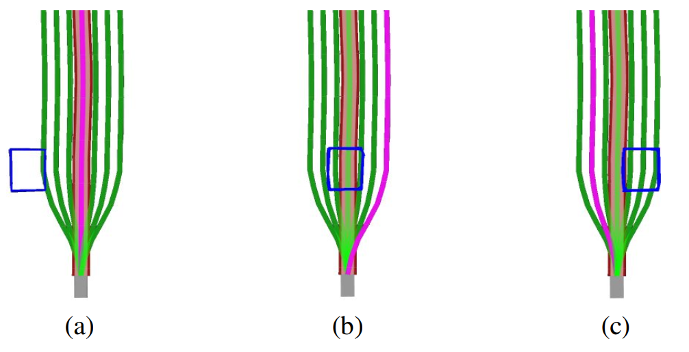
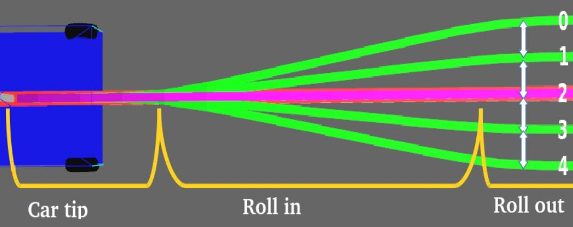
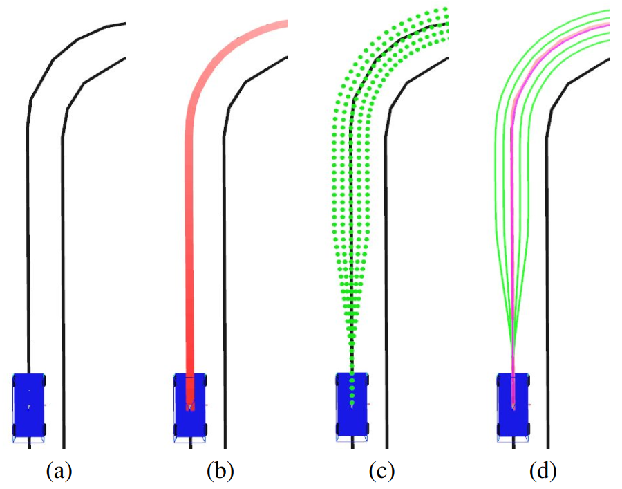
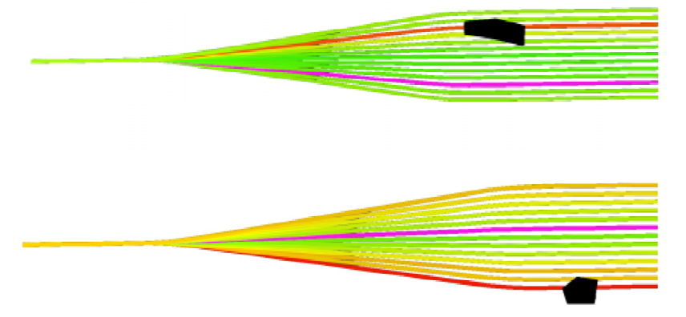

运动规划
1 车辆运动规划的概念
车辆运动规划是指生成衔接车辆起点与终点的几何路径，同时给出车辆沿该路径运动的速度信息，并使车辆在整个运动过程中满足运动学/动力学约束、碰撞躲避约束以及其他源自内部系统或外部环境的时间和/或空间约束条件。由于车辆的典型运动方式为轮式移动，因此一般在自动驾驶领域中提及的运动规划与轨迹规划含义等价。与运动规划或轨迹规划相比，路径规划仅仅负责生成满足空间约束条件的几何曲线，即忽略与时间相关的约束条件，因此在轮式移动车辆领域，可以认为运动规划/轨迹规划的结果较路径规划的结果更为全面。
从名义上讲，车辆的决策规划模块应向闭环控制环节下发轨迹规划结果，即车辆在一段时间内的速度及转角变量信息。然而在实际工程应用中，下发的往往是路径而非轨迹，这意味着轨迹规划被分解为路径规划 + 运动配时的两阶段计算架构，即首先生成行驶的几何曲线，随后考虑以何种速度沿着规划的曲线行驶。采取这种多阶段规划方案的原因可总结为以下几点：
（1）轨迹规划的计算过程困难，将其分解为“路径规划 + 速度规划”，能够大幅度降低求解负担；
（2）通过规划生成的轨迹难以在后继控制模块中被有效跟踪；
（3）决策规划模块仅需生成路径而非轨迹，车辆实际运动速度暂时无法或无需决策。
无论属于何种原因，无论规划的是轨迹或路径，现有方法均致力于生成高质量的车辆行驶行为，因此都具有参考价值。
2 运动规划方法
自 2017 年以来，在国内公开发表的学术文献中，面向自动驾驶车辆的路径规划/轨迹规划方法主要包括曲线插值方法、采样方法、机器学习方法以及最优控制方法。
2.1 曲线差值方法
曲线插值方法主要包括曲线元素组合方法以及插值拟合方法，能够生成具备良好连续、平滑属性的行驶路径。曲线元素组合方法一般用于车辆低速行驶工况下，泊车问题是此场景及任务的典型代表。车辆在低速行驶时，往往被允许中途短暂停泊并原地调整转角姿态，使其最小转弯半径所对应的圆弧形行驶路径得以被充分利用。作为著名的 Dubins 曲线、Reeds-Shepp 曲线算法的拓展或改进，一些学者考虑拼接圆弧段与直线段来完成既定任务。
2.2 采样方法
采样方法的基本思想是在构型空间 (configuration space) 中生成样本点，并寻找满足任务需求的样本点序列作为规划结果。常见的采样方法可分为随机采样和固定采样两类。随机采样，顾名思义，即在构型空间中生成样本点的方式具有随机性。热门的随机采样方法包括概率路标算法 (probabilistic roadmap method, PRM) 以及快速搜索随机树算法 (rapidly-exploring random tree， RRT)。随机采样方式具有盲目性。固定采样方法按照明确给定的规则生成一系列待选样本点，并通过筛选而选定其中质量最佳的样本。本车采用的 Open Planner 算法就属于一种固定采样方法。
2.3 机器学习方法
机器学习方法在应用于车辆运动规划问题时，应以任务需求、车辆初始运动状态、场景设置等基本信息为输入，以车辆的期望行驶路径/轨迹为输出。利用大量已有的输入-输出样本进行训练，进而获得输入 - 输出的内在映射关系，随后将这种映射关系用于求解实际的规划问题。
2.4 最优控制方法
描述车辆运动的直接方式是建立微分方程组，而在运动学微分方程的基础上补充必要的约束条件以及车辆行驶的性能指标式，则构成标准的开环最优控制问题，在计算机学科中有时也笼统地将其称为动态优化问题。算法表现依赖于问题模型的精确建立以及高效求解方法。
3 Open Planner规划算法
3.1 概述
Open Planner是 DARPA 比赛中斯坦福大学自动驾驶系统中采用的局部路径规划方法，其作用是结合上层全局路径规划模块输出的全局路径和感知模块输出的障碍物信息所给出的一条适合自动驾驶车辆跟踪的局部路径（论文名称：Open Source Integrated Planner for Autonomous Navigation in Highly Dynamic Environments）。
局部路径规划总的来说是在全局路径规划模块下，结合避障信息重新生成局部路径的模块，上层的全局路径规划确定了A到B的一个全局路径，不过轨迹跟踪模块(比如 pure pursuit)实际进行跟踪的不能是这个直接生成的全局路径，因为系统实际工作可能会有其他情况发生，轨迹跟踪模块实际跟踪的是结合障碍物信息的局部路径。下图为算法生成并选择路径的效果图，图（a）中的障碍物位于最左侧，因此中间路径是安全的，图（b）中的障碍物在中心线上，所以选择右侧的路径，图（c）中的障碍物位于中心线右侧，因此选择中心线左侧的道路。 
3.2 算法简介
整体来看 op_planner 的 local_planner 主要分为两部分：Rollouts Generator 和 Rollouts Evaluator,前者根据全局中心路径生成一系列平滑的候选局部路径，后者结合障碍物信息和其他因素计算各个 Rollout 的代价Cost，从而选出最终平滑的，无障碍的局部路径。
此模块的输入信息为全局规划路径、车辆姿态以及障碍物信息，需要配置的参数为 Rollout 数量、规划距离等，详细参数位于该功能包的 launch 文件夹下。
3.2.1 rollouts 生成
在此算法中，路径被划分为了三个部分：Cartip，Rollin, Rollout，如下如所示：

Cartip 部分从车辆中心点到水平采样的起点，这部分的长度决定了车辆切换不同轨迹的平滑程度。
Rollin 部分从水平采样的起点到平行采样的起点，这部分的长度和车辆速度密切相关，车辆速度越快，rollin 部分应越长，使得轨迹更加平滑。
Rollout 部分从平行采样的起点到最大规划距离，这部分里每一条 rollout 都是平行的，相隔距离由 rollout_density 来确定。
生成rollouts的算法主要包括三个部分：
1 截取全局路径，长度为最大局部路径规划距离。
2 针对截取的全局路径进行点采样。
3 平滑得到的采样点，生成最终候选轨迹。具体如下图所示：

3.2.2 路径评估
生成 rollouts 之后是结合障碍物的信息作轨迹评估，评估的主要指标是计算每条路径的代价函数，代价函数介绍涉及的三个 cost:
1 center cost：代表中间的局部轨迹优先级是最高的，在没有障碍物的情况下，优先选择中间的局部轨迹。
2 transition cost：限制了车辆不会跳跃多个局部路径，确保了车辆前进路径的平滑性。根据车辆当前所处的局部路径位置，转换到临近车道代价较小，转换到较远车道代价较大。
3 collision cost：主要分为 lateral_cost 和 longitudinal_cost，前者代表局部轨迹距离障碍物的横向距离，后者代表局部轨迹距离最近障碍物的纵向距离（如下图所示）。 
3.3 使用状态机生成行为状态
使用单一的算法去表示车辆的所有行为状态是困难的，所以我们借助状态机来表示车辆的各个行为状态，其转换条件如下表所示：
| 当前状态 | 目标状态 | 转换条件 |
|---|---|---|
| Start | Forward | 接收到启动指令 |
| Forward | Swerve | 当前轨迹是blocked,但有的轨迹不是blocked |
| Forward | Follow | 所有轨迹是blocked |
| Forward | Stop sign stop | 在停止距离范围内遇到停止标识 |
| Forward | Mission accomplished | 到达目标点 |
| Swerve | Follow | 所有轨迹是blocked |
| Swerve | Forward | 驶向中心线 |
| Follow | Forward | 不是所有轨迹为blocked |
| Stop sign stop | Stop sign wait | 速度为0 |
| Stop sign wait | Forward | 超过设置的停车时间 |
| Any state | Emergency stop | 收到紧急停车信号 |
| Emergency stop | Forward | 紧急停车信号消失 |